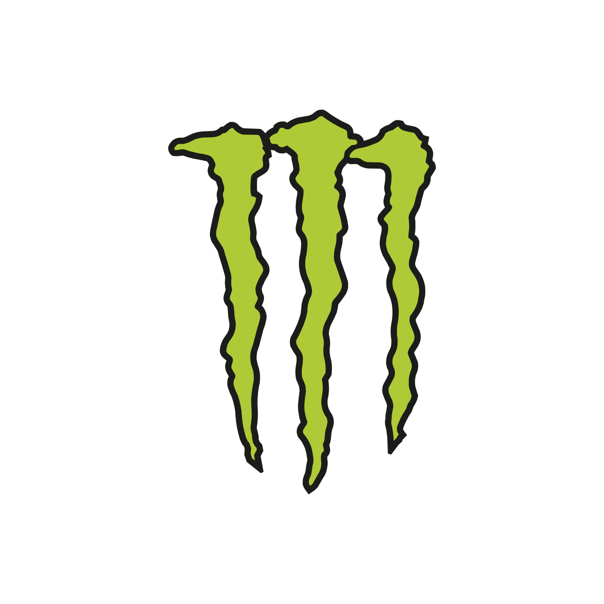

Menu
Principal
Halloween
Historia
Costumbres
Gatronomia
Simbolos y su significado
Todos Santos
Historia
Costumbres
Gatronomia
Simbolos y su significado
Contactos
COSTUMBRES HALLOWEEN
"Truco o Trato" (Trick-or-Treat)
Tallar Calabazas (Jack-o'-Lanterns)
Usar Disfraces (Disfrazarse)
Seleccione un botón para conocer más información.
Con el apoyo de:

Realizado por Grace Luna Verdueta, 2025